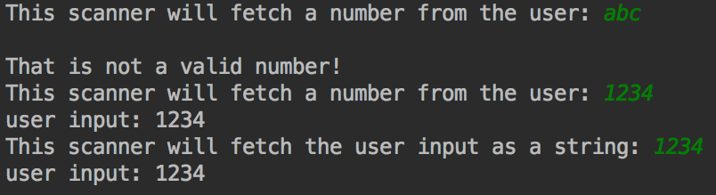

Tiny Java library for producing interactive command line prompts
It is very easy to use due to its small API, and extremely useful for applications where textual input from the user is needed.
It is also open-source and open to contributions here
The extensive feature list follows:
The library is built around two main concepts:
A Scanner represents a question
Defines the message shown and the expected answer type
The library includes multiple scanners, such as:
Scanners are questions. Prompt presents them to the user.
Prompt attaches to any input and output stream
and uses scanners to fetch data from the user
One instance of Prompt can make an infinite number of questions

public static void main(String[] args) {
// attach prompt to system's input/output
Prompt prompt = new Prompt(System.in, System.out);
// create a question, and set the message to be displayed
StringInputScanner question1 = new StringInputScanner();
question1.setMessage("What is your name?");
// create one more question
IntegerInputScanner question2 = new IntegerInputScanner();
question2.setMessage("What is your age?");
// use the prompt to make the first question
// this method will block the thread execution while waiting for user input
String name = prompt.getUserInput(question1);
// notice how the return type is defined by the scanner/question
int age = prompt.getUserInput(question2);
System.out.println("User's name: " + name + " | User's age: " + age);
}
To handle integer inputs, prompt-view includes
the IntegerInputScanner class
Validation by range or set of values can also be applied using IntegerRangeInputScanner or IntegerSetInputScanner
public static void main(String[] args) {
// accepts any integer
IntegerInputScanner anyInt = new IntegerInputScanner();
// accepts integers from 1 to 5
IntegerInputScanner intBetween = new IntegerRangeInputScanner(1, 5);
// in Portugal we would say "ou 8 ou 80.."
Set<Integer> validValues = new HashSet<>();
validValues.add(8);
validValues.add(80);
IntegerInputScanner bipolar = new IntegerSetInputScanner(validValues);
}
To handle double/float input, prompt-view includes
the DoubleInputScanner class
Validation by set or range can be applied using the DoubleSetInputScanner or DoubleRangeInputScanner
* Check it out peepz! *
public static void main(String[] args) {
Prompt prompt = new Prompt(System.in, System.out);
// accepts any double
DoubleInputScanner anyDouble = new DoubleInputScanner();
anyDouble.setMessage("How much money did you save today?");
Double amount = prompt.getUserInput(anyDouble); // 0.0
// accepts doubles from 4.500 to 4.650
DoubleRangeInputScanner doubleBetween = new DoubleRangeInputScanner(4.500, 4.650);
doubleBetween.setMessage("What's your guess for the bag's weight, Anabela?");
Double guess = prompt.getUserInput(doubleBetween); // 4.520
}
To fetch a string from the user, prompt-view includes
the StringInputScanner class
To fetch passwords or masked strings, you can use
the PasswordInputScanner class
You may also apply validation using an array of strings with the StringSetInputScanner class
public static void main(String[] args) {
Prompt prompt = new Prompt(System.in, System.out);
// this scanner accepts any string
StringInputScanner question1 = new StringInputScanner();
// this scanner hides the input while typing
PasswordInputScanner question2 = new PasswordInputScanner();
// this scanner only accepts words present in a set of strings
Set<String> options = new HashSet<>();
options.add("yes");
options.add("no");
StringSetInputScanner question3 = new StringSetInputScanner(options);
System.out.println("User " + (prompt.getUserInput(question3).equals("yes") ?
"agrees." : "does not agree."));
}

public static void main(String[] args) {
Prompt prompt = new Prompt(System.in, System.out);
// options that you want to be presented are supplied in an array of strings
String[] options = {"Go", "Stay"};
// create a menu with those options and set the message
MenuInputScanner scanner = new MenuInputScanner(options);
scanner.setMessage("Should I stay or should I go?");
// show the menu to the user and get the selected answer
int answerIndex = prompt.getUserInput(scanner);
System.out.println("User wants to " + options[answerIndex - 1]);
}
Scanners with validation (or menus) will re-ask the question
until a valid answer is given
An error message is displayed when validation fails
public static void main(String[] args) {
Prompt prompt = new Prompt(System.in, System.out);
// accepts integers from 1 to 11
IntegerInputScanner intBetween = new IntegerRangeInputScanner(1, 11);
intBetween.setMessage("Twist the knob.");
// will present an error message on validation fail (before re-asking the question)
intBetween.setError("Sorry. This only goes up to 11.");
System.out.println("Switching knob to position " +
prompt.getUserInput(intBetween));
}